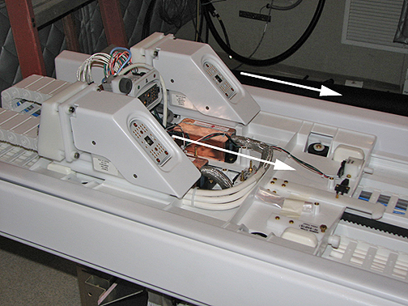

Operating Documentation
Direction 5670000, Rev# 1
Optima MR450w 1.5T Service Methods
Module Version 4.0, Version Date 11/18/08
Operating Documentation |
| Required Persons | Preliminary Reqs | Procedure | Finalization |
|---|---|---|---|
| 1 | Not Applicable | 10 hours | 30 mins |
The Discovery MR750 LPCA has been significantly improved in terms of replacing the P1 and P2 coil connectors. Quick Disconnect Connectors allow easy replacement of the coil connectors as they slide on and off their own track with minimal effort.
| Item | Qty | Effectivity | Part# | Manufacturer | |
|---|---|---|---|---|---|
| Non-Magnetic Service Tool Kit | 1 | - | 5112581 | - | |
| Item | Qty | Effectivity | Part# | Manufacturer | |
|---|---|---|---|---|---|
| Quick Disconnect Connector | 1 | - | 5184208-3 | - | |
| Quick Disconnect Connector (Transmit) | 1 | - | 5184208 | - | |
| ||||
| Electrical Hazard! | ||||
| Strong voltages are present in or around the LPCA when energized. | ||||
| Remove power from the LPCA at the pdu. then lockout and tagout the pdu. |
Run LPCA to the rear of the magnet and remove the LPCA cover.
Use sufficient human force to pull the Connector forward, thereby releasing it from its track.
Illustration 1: Path of Quick Disconnect Connectors

Place the new Connector onto its track and press firmly until connection is made.
Replace LPCA cover and reconnect to Patient Table.
Run the Coil Datapath Diagnostics tool to confirm coil signal.
No finalization steps.